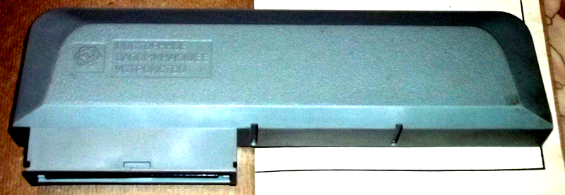
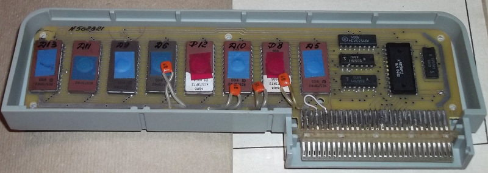
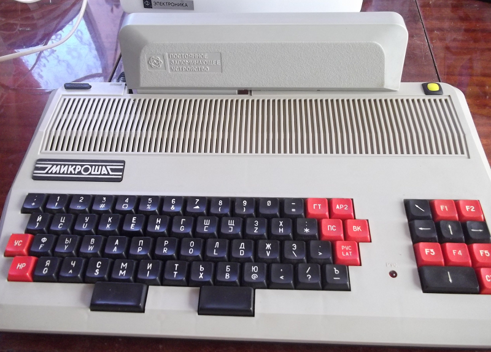
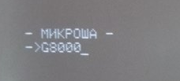
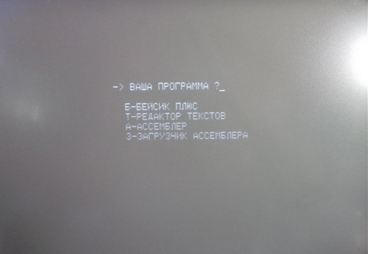

Устройство "Модуль ПЗУ" для Микроши выпускалось отдельно. Цену в рублях СССР выяснить не удалось. Судя по составу компонентов, цена устройства должна была быть не выше 100-120 руб. (цена самой Микроши была 500 руб).
В ПЗУ были прошиты программы:
Такой модуль ПЗУ превращал Микрошу в прекрасный бытовой компьютер своего времени, который можно было включить, и сразу сделать математические вычисления с помощью Бейсика. (В стандартной поставке, Микроша, сразу после включения, предоставлял возможность работы только в машинных кодах).Так же не нужно было двухэтапной загрузки с ленты интерпретатора Бейсика и текста программы на Бейсике или Ассемблера и текста программы на Ассемблере: с модулем ПЗУ нужно было грузить с ленты только текст программы.
Сам модуль поставлялся в такой коробке:
Модуль ПЗУ по своему внешнему виду никак не обозначал, что он создан именно для ПЭВМ Микроша:

Плата однослойная, двусторонняя, монтаж элементов сделан с одной стороны:

Микроша в сборе с модулем ПЗУ выглядела так:

После вставки модуля, содержимое памяти модуля отображалось в адресах 8000-BFFF. Первые 256 байт занимала программа-меню, которая копировала содержимое выбранной программы в ОЗУ и передавала ей управление. Таким образом, чтобы воспользоваться Бейсиком сразу после включения компьютера, надо было выполнить код с адреса 8000. Делалось это командой:
> G8000
На экране выглядело вот так:

В результате появлялось меню, чем-то напоминающее стартовое меню Spectrum 128:

Пользователь нажимал нужную букву, и за две-три секунды грузилась нужная программа.
Вот так работал модуль расширения. В принципе, ничего сложного и очень юзерфрендли по меркам конца восьмидесятых.
* * *
К записи приложены файлы официальной документации на модуль ПЗУ, дамп прошивки модуля ПЗУ, и конфиг для какого-то (надо выяснить) эмулятора, в котором модуль ПЗУ можно эмулировать.